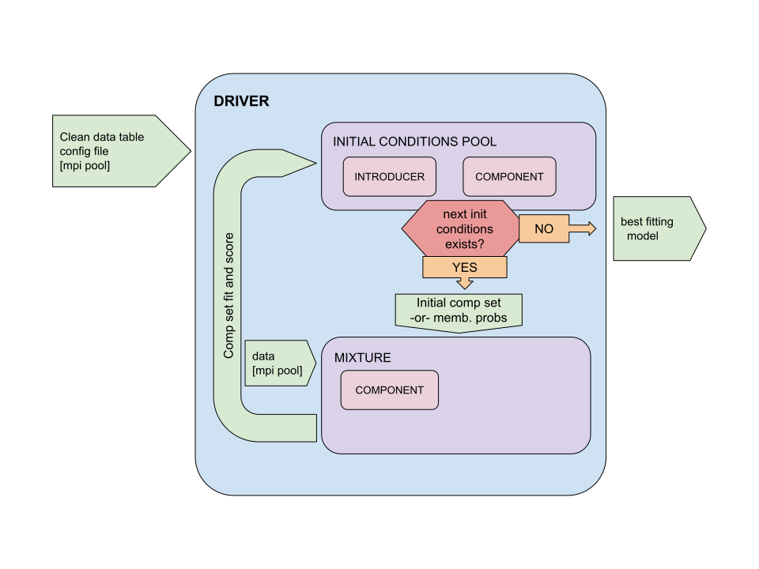

General Overview#
Chronostar: The Next Generation#
Note
All the guides are slightly out of date with the code. The general approach and algorithms are correct, but the specific module and class names may slightly differ.
Here we provide a deep dive into the various parts of Chronostar, detailing how they work and hopefully providing enough guidance such that users can implement their own custom classes in order to augment Chronostar’s functionality.
The framework of Chronostar TNG consists of 5 classes. A Driver, a Initial Conditions Pool, a Mixture and a Component.
{kind=link}
The goal of Chronostar is to be a flexible framework for fitting Gaussian Mixture Models to astronomical data. This will be achieved by utilising “injected dependencies”. The Driver is composed of a collection of 4 classes (ICPool, Introducer, Mixture and Component) for which Chronostar provides many implementations. Anyone wishing to modify aspects of Chronostar (e.g. input data, fitting method, models of components) simply needs to provide the driver with their own class that matches the required interface, whether that be by writing the class from scratch, or by using inheritance to extend pre-existing classes.
Here we provide a general overview of the framework.
Summary of Driver#
The Driver is the top level manager of the entire process. It parses the config file, instantiates classes where appropriate, passes on the initialization parameters as necessary, and then runs the primary loop. In a multiprocessor implementation, the Driver could also manage the MPI Pool, providing each worker with a mixture model to maximize.
Driver-ICPool interface#
The Initial Conditions Pool or ICPool serves as (perhaps surprisingly) a pool of initial conditions. An ICPool generates set after set of plausible InitialConditions. An InitialCondition is a labelled tuple of Components. For each set of initial conditions the Driver initializes a Mixture Model (Gaussian or otherwise). The Mixture Model fits itself to the data by maximizing the parameters of its list of Components. Once fit the Mixture Model calculates its final score (AIC, BIC, etc.). The Driver registers each fit to the ICPool along with its score. The primary loop repeats and the Driver acquires the next set of initial conditions. When the ICPool runs out of plausible initial conditions, the primary loop ends and the Driver returns the best fit.
Note
The interaction between Driver and ICPool lends itself well to parallelisation, an aspect sorely lacking in the original Chronostar. The number of processes that can fit a mixture model in parallel is only capped by the number of sets of initial conditions sitting in the ICPool.
ICPool internal#
Lets explore how the ICPool cultivates this pool of initial conditions and determines when to trigger an end to the primary loop. The ICPool builds up a registry of previous fits and their scores as registered by the Driver. The ICPool has an internal queue, to which it adds the next InitialConditions in batches called generations. The precise mechanism by which the next generation of InitialConditions is generated is unique to each ICPool.
Summary of Mixture#
Lets focus now on how a Mixture Model fits itself to the data. We acknowledge the expert craftspersonship of sklearn.mixture.GaussianMixture and so our Mixture Models follow their interface closely, with our example implementation even inheriting from sklearn.mixture.BaseMixture. Our Mixture Model expects the inputdata to be array-like of floats. The Mixture Model runs an Expectation-Maximization (EM) algorithm on the data and its list of Components. The interesting parts of the EM algorithm (how the various features in the data is interpreted, how the Component parameters are maximized) are delegated to the Components themselves. The Mixture Model handles only the boring, tedious, delicate business of membership probabilities and EM convergence. It is unlikely the user will need to write their own Mixture Model.
Summary of Component#
The Component class is where the most variation will likely appear. The Component implementation determines both what features we’re fitting to, and how we find the best parameters. For example, SphereSpaceTimeComponent fits to the cartesian positions and velocities of the stars and
fits a spherical 6D Gaussian which is transformed through the galactic potential via an epicyclic approximation.
However many alternative implementations are viable.
The features are determined by your input data and could include position, velocity, age approximators, chemical composition etc.
The method of finding the best parameters could involve emcee, scipy.optimize. You can customize what distribution your component takes, for example a 6D Gaussian with or without an incorporated age projection.
As long as the data has the columns your Component expects, your Component can do whatever it likes, completely independent from the rest of Chronostar.